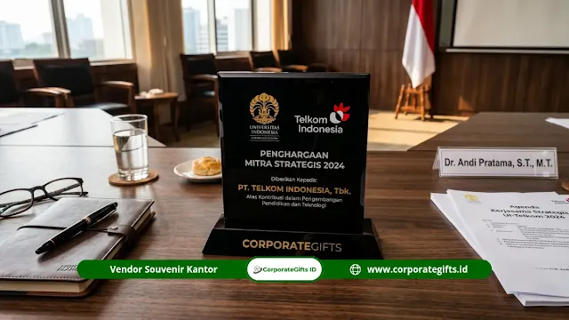

Corporate Gifts ID - Souvenir kerja sama PTN adalah cendera mata resmi yang diserahkan dalam acara penandatanganan Nota Kesepahaman (MoU) atau Perjanjian Kerja Sama (MoA/PKS) sebagai penanda fisik komitmen kelembagaan antara perguruan tinggi negeri dan lembaga mitranya. Dalam protokol acara resmi kenegaraan dan institusi publik, souvenir bukan sekadar buah tangan seremonial, melainkan representasi martabat institusi, simbol konfirmasi komitmen, dan instrumen diplomasi kelembagaan yang mempererat relasi jangka panjang. Artikel ini mengupas tuntas makna filosofis, peran protokoler, kriteria kurasi, dan panduan pengadaan souvenir kerja sama PTN yang elegan bagi tim humas dan kerja sama kelembagaan.
Poin Kunci Makna Souvenir Kerja Sama PTN:
- Penanda Fisik Komitmen Resmi: Simbolisasi konkret dari butir-butir kesepakatan MoU/MoA yang diserahkan langsung oleh pimpinan tinggi institusi.
- Representasi Martabat & Identitas PTN: Desain eksklusif berlogo resmi mencerminkan standar mutu, reputasi akademik, dan kredibilitas universitas negeri.
- Penguat Diplomasi Kelembagaan: Menjadi media komunikasi visual berkelanjutan saat cinderamata dipajang di ruang kerja pimpinan mitra.
- Memenuhi Standar Protokol Formal: Penyerahan diatur secara terstruktur dalam tata upacara kelembagaan dan akuntabilitas pengadaan publik.
Apa Fungsi Souvenir dalam Protokol Resmi Kerja Sama PTN?
Dalam tata kelola protokoler perguruan tinggi negeri (PTN-BH, PTN-BLU, maupun PTN Satker), pertukaran cinderamata resmi memiliki tiga pilar fungsi utama yang berjalan berdampingan:
1. Simbolisasi Komitmen Resmi
Penandatanganan dokumen MoU menandai lahirnya kesepakatan tertulis. Penyerahan souvenir kantor resmi bertindak sebagai segel visual yang mengukuhkan janji kerja sama tersebut secara kultural dan institusional. Momen ini menjadi puncak dokumentasi media yang disaksikan oleh para pemangku kepentingan kedua pihak.
2. Representasi Identitas Institusi
Souvenir yang dirancang dengan presisi logo institusi bertindak sebagai duta visual perguruan tinggi di luar lingkungan kampus. Ketika cinderamata tersebut ditempatkan di ruang kerja direksi perusahaan mitra, ruang rapat kedutaan, atau kantor kementerian, citra PTN hadir secara konstan dan berwibawa.
3. Penguatan Relasi Emosional Antarpimpinan
Meskipun bersifat formal, pemberian cinderamata berkualitas menghadirkan kehangatan personal antarpimpinan (Rektor, Dekan, Direktur Lembaga). Hal ini memperkuat social capital yang sangat krusial dalam memperlancar eksekusi program di masa mendatang.

Kombinasi plakat kristal berukir logo dan executive gift set: representasi standar keunggulan institusi publik.
Mengapa Souvenir Penting dalam Acara MoU Universitas Negeri?
Universitas negeri mengemban marwah akademik dan kepercayaan publik. Setiap elemen dalam acara kemitraan merefleksikan nilai-nilai keunggulan yang dijunjung institusi:
- Proyeksi Citra Profesional PTN: Kualitas material cinderamata—seperti logam kuningan anti-karat, kayu jati berpelitur halus, atau tumbler stainless steel SUS 304—secara langsung mencerminkan standar profesionalisme kampus di hadapan mitra multinasional maupun BUMN.
- Lonjakan Kemitraan Strategis Era MBKM: Kebijakan Merdeka Belajar Kampus Merdeka (MBKM) mendorong intensitas kerja sama kampus dengan dunia industri (DUDI) dan lembaga riset global, sehingga pengadaan souvenir berkualitas menjadi kebutuhan rutin yang strategis.
- Efek Resiprositas dan Brand Recall: Barang yang memiliki kegunaan tinggi (seperti executive pen, smart desk clock, atau powerbank) akan selalu digunakan oleh pimpinan mitra, menciptakan pengingat harian terhadap kolaborasi riset dan magang yang telah disepakati.
Kriteria Produk Souvenir Kerja Sama PTN yang Tepat & Berkelas
Agar cinderamata kemitraan memberikan impresi terbaik, tim humas dan biro kerja sama universitas perlu memperhatikan parameter berikut:
- Kesesuaian Level Protokoler: Bedakan peruntukan souvenir antara penandatanganan tingkat Universitas (Rektorat), tingkat Fakultas (Dekanat), hingga program kemitraan mahasiswa di lapangan.
- Kualitas Material yang Kokoh: Hindari produk berbahan plastik tipis atau mudah patah. Prioritaskan bahan padat berbobot seperti akrilik tebal, kristal optik, logam, dan kulit sintetis bermutu tinggi.
- Kustomisasi Logo yang Rapi & Presisi: Gunakan teknik grafir laser permanen atau emboss/deboss emas yang tahan lama, menjamin logo universitas tampil tajam tanpa risiko luntur.
- Kemasan Hardbox Beludru Eksklusif: Kotak pembungkus bermaterial rigid hardbox dengan lapisan busa beludru cetak presisi menambah nilai sakral saat prosesi serah terima di depan kamera media.
Tabel Rekomendasi Souvenir Kerja Sama PTN Berdasarkan Level Protokoler
Berikut klasifikasi jenis produk souvenir kerja sama perguruan tinggi negeri yang disesuaikan dengan tingkatan acara dan mitra penerima:
| Tingkat Acara Protokoler | Rekomendasi Cinderamata | Material & Finishing | Nilai Filosofis |
|---|---|---|---|
| Tingkat Rektorat (VIP Nasional/Global) | Plakat Kristal 3D, Executive Gift Set Hardbox, Wastra Batik Berbingkai | Kristal Optik, Kayu Jati, Kuningan Lapis Emas | Kehormatan tertinggi, komitmen strategis jangka panjang, prestise institusi. |
| Tingkat Dekanat & Lembaga Riset | Agenda Kulit Premium Deboss, Pulpen Metal Grafir, Desk Clock Digital | PU Leather Grade A, Aluminium Anodized | Fungsionalitas profesional, kolaborasi riset, efisiensi kerja. |
| Kemitraan Industri & DUDI (MBKM) | Smart Tumbler LED Suhu SUS 304, Power Bank Fast Charging, Wireless Charger | Stainless 304 Food Grade, Metal Shell UV Print | Modernitas, dinamika inovasi teknologi, keberlanjutan relasi kerja. |
| Delegasi Mahasiswa & Tamu Kunjungan | Tote Bag Kanvas Premium, Notebook Spiral Custom, Gantungan Kunci Logam | Kanvas Tebal, Kertas Eco-Friendly bersertifikat FSC | Konektivitas generasi muda, keterbukaan akademik, semangat kolaborasi. |
Butuh konsultasi pengadaan cinderamata resmi untuk acara penandatanganan MoU kampus Anda? Kunjungi Katalog Resmi CorporateGifts.ID atau mintalah penawaran resmi melalui formulir Permintaan Penawaran (RFQ) dengan dukungan kelengkapan administrasi pengadaan instansi pemerintah.